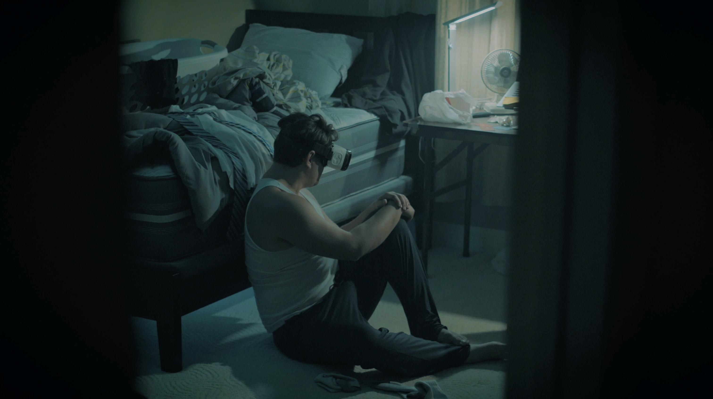

Reality, One Frame at a Time
The Art of Visual Storytelling
I've always been drawn to the way visuals can tell a story, how a simple choice in lighting, framing, or pacing can completely change the way something feels. That curiosity pulled me into filmmaking and videography early on, and over the years I've worked on everything from short films to event shoots. Whether I'm behind a camera or editing a scene, I'm always chasing that mix of precision and emotion, where the technical meets the human. My goal is to create visuals that don't just look clean, but actually make people feel something.
Process and Adaptation

My process usually starts with experimentation. I love testing new gear, camera tricks, and editing styles to see how far I can push a concept. Working as a DP on projects like Forever My Boy and other shorts taught me how important it is to adapt. Every set, every team, and every shot needs its own rhythm. I also have a deep respect for structure and planning, but I leave room for instinct, those spontaneous ideas often end up being the strongest moments in a film.
Beyond the Frame

When I'm not focused on film, I find myself drawn to the bigger picture. I've always been fascinated by space, physics, and the unseen forces that shape our universe. There's something humbling about realizing our scale compared to everything beyond our patch of dirt, yet how much we've managed to learn about it. Whether it's diving into astrophysics videos or filming the night sky, I love exploring how things work on a cosmic scale. That same curiosity drives the way I see and create: always looking for the patterns that connect everything.